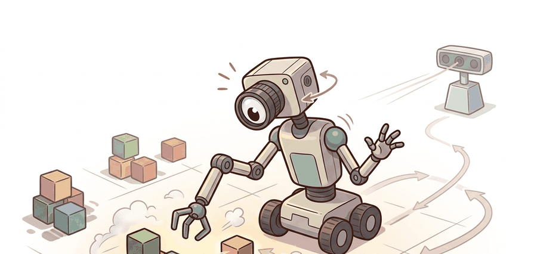

Section 19.2: Intrinsic motivation, curiosity, count-based and novelty methods
"Intrinsic motivation, curiosity, count-based and novelty methods matters when the next action changes the evidence you thought you had."

Figure 19.2A: Novelty is useful when it points the agent toward learnable gaps, not when it rewards every shiny distraction equally.
A Careful Control Loop
Big Picture
Intrinsic motivation, curiosity, count-based, and novelty methods give an agent a reason to move before the external reward appears. They are useful in embodied worlds because a sparse task reward may arrive only after the robot has already discovered doorways, object affordances, viewpoints, and safe approaches.
Reader Pathway
Read this section as a bonus-design chain: first define what counts as "visited," then define which prediction error counts as curiosity, then test whether the bonus changes useful action rather than merely producing restless motion.
This section develops the technical contract for internal exploration rewards. Counts, pseudo-counts, prediction error, disagreement, and novelty all add an auxiliary reward signal, but they differ in what they treat as unknown.
The key question is practical: what feature representation receives the count or prediction error, and does that representation align with embodied progress such as new viewpoints, reachable states, object contacts, or goal-relevant affordances?
Action Is The Test
An intrinsic bonus earns its place when it changes the measurable action interface. The reader should keep asking whether the bonus makes the agent inspect a useful doorway, revisit a promising frontier, or avoid wasting rollouts on sensor noise.
Theory
We can view the agent at time $t$ as receiving an observation $o_t$, encoding it as features $\phi(o_t)$, choosing an action $a_t$, and receiving both an external reward $r_t^{ext}$ and an intrinsic reward $r_t^{int}$. A count-based bonus often uses a form such as $r_t^{int}=\beta / \sqrt{N(\phi(o_t))}$, where $N$ is the visit count for the feature bin and $\beta$ sets the strength of the bonus.
Curiosity methods replace explicit counts with learnability. For example, a forward model predicts $\phi(o_{t+1})$ from $\phi(o_t)$ and $a_t$, then rewards prediction error when the next observation is not yet well modeled. The design danger is that unpredictable noise, moving shadows, or camera artifacts can look "interesting" even when they do not improve task competence.
Mechanism
The mechanism is a sequence of transformations: encode the observation, update the novelty statistic, compute the intrinsic bonus, combine it with the task reward, and monitor whether the selected action reaches new useful state. Each transformation should have a measurable contract, otherwise a high intrinsic return can hide aimless motion.
Worked Example
Code Fragment 19.2.1 shows the count-based idea without hiding it inside a learner. A repeated feature receives a smaller bonus, so the agent has a measurable reason to leave the familiar hallway and test a new cell.
# Compute a count-based intrinsic bonus for visited feature bins.
# Repeated bins receive smaller rewards, so novelty decays locally.
from collections import Counter
import math
feature_trace = ["hall:0", "hall:1", "hall:1", "door:2", "door:2", "room:3"]
counts = Counter()
beta = 0.2
for feature in feature_trace:
counts[feature] += 1
bonus = beta / math.sqrt(counts[feature])
print(feature, counts[feature], round(bonus, 3))
Code Fragment 19.2.1: This snippet computes a count bonus from the feature bins in feature_trace. The second visit to hall:1 and door:2 receives a lower reward, which makes the decay in novelty visible.
Expected output: repeated bins should show lower intrinsic reward than first-time bins. If the feature encoder maps every camera frame to a unique bin, this diagnostic would never decay and the agent would be paid for visual noise.
Library Shortcut
The from-scratch fragment is for understanding. In a practical system, use Gymnasium or MiniGrid to expose sparse-reward environments, CleanRL or Stable-Baselines3 for baseline learners, and Habitat-Lab when novelty must be measured over embodied navigation states. The shortcut removes boilerplate so the engineering attention goes to feature design, bonus scaling, and diagnostic traces.
Practical Recipe
Choose the feature space for novelty before choosing the learning algorithm.
Plot intrinsic reward separately from external reward, action distance, and task progress.
Clamp or normalize the bonus so curiosity does not dominate the task reward for the whole run.
Record failures as structured cases: noisy feature, unreachable novelty, reward hacking, derailment, or evaluation mismatch.
Run at least one perturbation test that changes visual noise without changing the task state.
Common Failure Mode
The common mistake is to reward prediction error without checking whether the error is controllable. A flickering monitor, reflective floor, or moving person can keep curiosity high while the robot learns little about the task.
Practical Example
A navigation team using curiosity should log external reward, intrinsic reward, feature-bin counts, map coverage, collisions, and whether each newly visited area is reachable again. The logs reveal whether novelty is expanding useful coverage or paying the agent to chase aliasing and camera noise.
Memory Hook
Curiosity is a good intern and a poor manager. It should bring the agent to promising evidence, not set the entire company strategy.
Research Frontier
A core research frontier is controllable curiosity: rewarding surprise that the agent can reduce through action while ignoring nuisance variation. This connects count-based exploration, learned world models, disagreement bonuses, and embodied coverage metrics into one question: did the agent discover a state it can use again?
Self Check
Can you name the novelty feature, bonus scale, external reward, action selected because of the bonus, and most likely noise source? If not, the curiosity signal is still too vague.
Builder's Deep Dive
The idea in this section becomes useful when it is tied to a closed-loop bonus contract. In this chapter on Exploration in Embodied Worlds, the contract names the feature encoder, the count or prediction-error statistic, the action representation, the bonus scale, and the evaluation artifact. Without that contract, an agent can look curious while spending every rollout on unhelpful novelty.
The graduate-level habit is to separate three claims. The conceptual claim explains why the bonus should drive exploration. The representation claim explains what gets counted or predicted. The evidence claim records whether coverage, controllability, and task progress improve in the same run.
Practical Tool Choices For This Section
Tool or Library
Role in the Topic
Builder Advice
Gymnasium
Sparse-reward baseline
Use it to verify reward and termination plumbing before adding any intrinsic bonus.
MiniGrid
Count and novelty diagnostics
Use it when the feature bins, doors, keys, and rooms make visit counts easy to inspect.
CleanRL
Readable learner baseline
Use it when you need a compact training script where bonus scaling and logging are visible.
Habitat-Lab
Embodied coverage metric
Use it when novelty should correspond to new viewpoints, map coverage, or reachable navigation states.
Stable-Baselines3
Maintained policy training
Use it after the bonus diagnostic is settled, with callbacks that log intrinsic and external reward separately.
Implementation Recipe
A robust implementation starts with a tiny, inspectable bonus trace and only then moves to a maintained learner. The baseline should log the feature key, visit count, intrinsic reward, external reward, action, and termination condition. The library version should produce the same artifact schema, so the comparison is a same-task comparison rather than a story assembled from separate experiments.
Write a one-paragraph bonus contract with feature key, count or prediction error, external reward, and failure fields.
Start with the smallest simulator or wrapper that exposes repeated and novel states clearly.
Run one deterministic smoke test and one nuisance-noise perturbation before scaling.
Save a single result artifact containing configuration, seed, rewards, counts, coverage traces, and failure labels.
Compare methods only when one script evaluates external reward, intrinsic reward, and coverage on the same task panel.
# Build one intrinsic-reward evidence record for exploration.
# The same schema should be used for count, curiosity, and novelty variants.
from dataclasses import dataclass, asdict
@dataclass
class EvidenceRecord:
section: str
tool: str
observation: str
action: str
metric: str
bonus_signal: str
perturbation: str
def as_row(self) -> dict[str, object]:
return asdict(self)
record = EvidenceRecord(
section="19.2",
tool="Gymnasium",
observation="record after the perturbation run: sensor or state input",
action="record after the perturbation run: control or decision output",
metric="record after the perturbation run: construct-matched success metric",
bonus_signal="record after the perturbation run: count, prediction error, or disagreement",
perturbation="record after the perturbation run: visual noise, aliasing, delay, or domain shift",
)
print(record.as_row())
{'section': '19.2', 'tool': 'Gymnasium', 'observation': 'record after the perturbation run: sensor or state input', 'action': 'record after the perturbation run: control or decision output', 'metric': 'record after the perturbation run: construct-matched success metric', 'bonus_signal': 'record after the perturbation run: count, prediction error, or disagreement', 'perturbation': 'record after the perturbation run: visual noise, aliasing, delay, or domain shift'}
Code Fragment 19.2.2: The evidence record makes bonus_signal explicit so count, curiosity, and disagreement variants can be compared on the same fields. The perturbation field forces the run to test whether novelty survives nuisance noise.
Teaching Move
Ask readers to fill the bonus and perturbation fields before they touch model code. The exercise exposes feature choices that would otherwise be hidden inside the reward curve.
Failure Analysis Pattern
When an intrinsic reward method fails, avoid labeling the whole method as weak. First assign the failure to representation aliasing, uncontrollable noise, bonus domination, derailment, insufficient reset, sparse external reward, or evaluation. Then rerun one controlled perturbation that isolates the suspected cause.
Evaluation Recipe
For intrinsic motivation methods, compare only construct-matched metrics that are co-computed in one pass on one configuration: same environment panel, same policy checkpoint, same seed set, same feature encoder, same bonus scale, same perturbation suite, and the same success definition. Save external reward, intrinsic reward, coverage, collision counts, and failure labels in one artifact so every number in a later table is backed by the same run.
Key Takeaway
Intrinsic motivation helps when it turns sparse reward into directed discovery: more reachable states, better coverage, fewer dead ends, and clearer evidence about what the agent learned.
Exercise 19.2.1
Design a count-based or curiosity experiment in simulation. Specify the feature encoder, bonus formula, bonus scale, external reward, coverage metric, and one nuisance perturbation that should not be rewarded.
What's Next?
This section turned intrinsic motivation into a testable bonus contract: define the feature, compute the bonus, save one comparable artifact, and diagnose curiosity failures by signal source. Next, continue with Section 19.3, where exploration must satisfy explicit safety constraints.
References & Further Reading
Foundational Papers, Tools, and Practice References
This work grounds optimism and uncertainty-driven exploration in tabular MDPs. It provides the clean version of the idea before counts are approximated through learned or discretized embodied features.
The paper connects pseudo-counts to intrinsic rewards in high-dimensional spaces. It is the key bridge from literal state counts to density-model counts that can operate on visual observations.
Intrinsic Curiosity Module rewards prediction progress in learned feature space. Use it to study the difference between useful controllable surprise and nuisance prediction error.
RND is a practical intrinsic reward method based on prediction error. Its appeal is implementation simplicity, but this section emphasizes logging where high error sends the embodied agent.
DD-PPO connects exploration to distributed simulation and navigation evaluation. It is useful here for thinking about coverage, scale, and whether large rollout budgets change the exploration conclusion.
Habitat-Lab provides embodied navigation and interaction environments. Use it to test whether a novelty bonus increases map coverage and goal progress under the same seed panel.